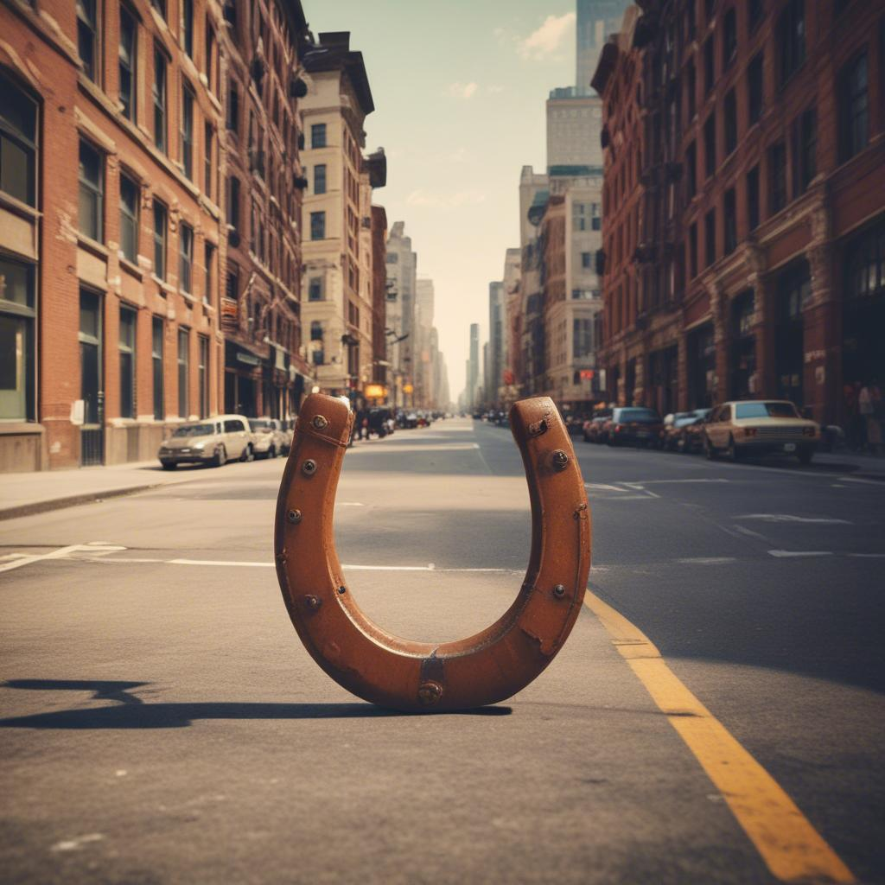

Alex, un estudiante de instituto con fama de tener mala suerte, encuentra por casualidad una herradura mientras trabaja en el huerto escolar. Intrigado por el origen del objeto, descubre la historia de Enrique, un profesor inspirador que marcó a generaciones de alumnos.
ACTIVIDAD Una buena canción cambia una película
Duración: 30 min
30:00
Agrupamiento: Grupos de 4 alumnos/as
24
Seguro que se te viene a la mente la típica película o serie de televisión de adolescentes que pasan la mayor parte de su tiempo en los pasillos de su instituto y donde viven mil y una aventuras. Ahora, ¡déjame adivinar!, estás tarareando (casi sin querer) su canción de cabecera. ¡Qué ritmo tan pegadizo!
La música forma parte de nuestro día a día. Nos acompaña en cada etapa de nuestra vida. Está presente en momentos inolvidables. Describe lugares con encanto y moldea a personas difíciles de olvidar. Una canción para cada cosa que hagamos y vivamos. La banda sonora de nuestras vidas con estribillo y compás.
Nuestra película también tendrá su canción pegadiza. Aquella de la que no puedes escapar.
En grupos de cuatro, trabajaréis en la elaboración de la letra de esa canción siempre que sea fiel al argumento de la película. Ojo, ¡prohibido spoilers! por lo que hay que procurar no dar pistas al oyente del desenlace final.
Cuando tengáis la letra, cread la canción usando los recursos con IA trabajados en clase.
Presentad vuestra creación al resto de la clase.
Como ejemplo de serie con canción inicial contagiosa sería Física o Química (2008-2011). La canción se titulaba Física o Química del grupo Despistaos.
Aquí tenéis el vídeo para que lo recordéis y la volváis a cantar:
And the winner is...
La Herradura de AlexAlumnado del IES Mare Nostrum (2024)
Elaboración propia. La Herradura de Álex(CC BY-SA) 
Elaboración propia. La Herradura generada por IA(CC BY-SA)